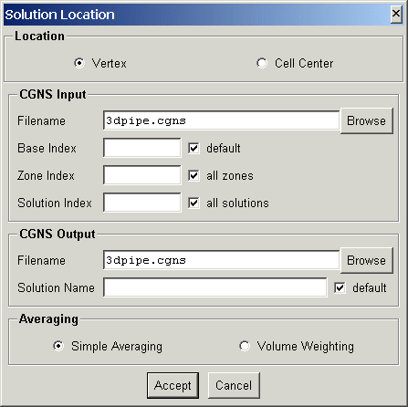
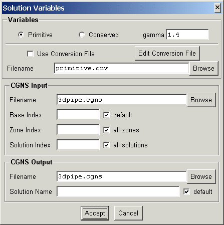
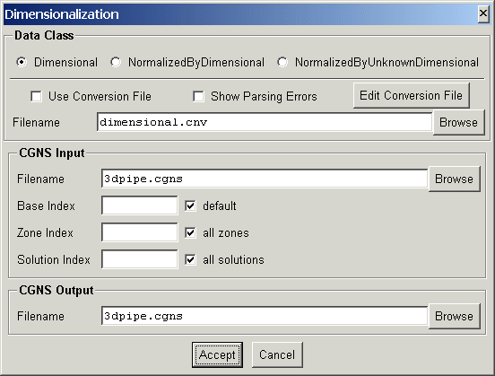

This document describes the conversion routines which operate on CGNS data files. The following conversion utilities are currently available.
| Solution Location | convert_location | Convert between cell-center and vertex solutions |
| Solution Variables | convert_variables | Convert between primitive and conserved variables |
| Dimensionalization | convert_dataclass | Convert between dimensional and nondimensional variables |
Converts the solution in a CGNS file between cell-center and vertex locations.
The program is executed from the command line as:
convert_location options CGNSfile newCGNSfile
The input CGNS file, CGNSfile is required. If the output CGNS file, newCGNSfile, is specified the modified CGNS data file will be written to it, otherwise CGNSfile will be modified. The command line options are:
| option | description |
| -c | convert solution location to cell-center |
| -v | convert solution location to vertex |
| -w | use volume weighted averaging (default is simple averaging) |
| -b base | use CGNS base index base. (default 1) |
| -z zone | read zone number zone (default all zones) |
| -s sol | read solution number sol (default all solutions) |
| -S name | write to solution name (default is same as read) |
| options valid only for conversion to cell-center | |
| -i | add rind cell at imin |
| -I | add rind cell at imax |
| -j | add rind cell at jmin |
| -J | add rind cell at jmax |
| -k | add rind cell at kmin |
| -K | add rind cell at kmax |
One of the options, -c or -v must be specified; the others are optional.
The following panel is created when launched from the ADFviewer GUI:

This allows interactive selection of the input and output files and options. The Accept button will then construct the command line and run convert_location. If the conversion is successful, ADFviewer will read and display the CGNS file.
Converts the solution in a CGNS file between primitive and conserved variables.
The program is executed from the command line as:
convert_variables options CGNSfile newCGNSfile
The input CGNS file, CGNSfile is required. If the output CGNS file, newCGNSfile, is specified the modified CGNS data file will be written to it, otherwise CGNSfile will be modified. The command line options are:
| option | description |
| -p | convert to primitive variables |
| -c | convert to conserved variables |
| -f file | read conversion expressions from file file |
| -b base | use CGNS base index base. (default 1) |
| -z zone | read zone number zone (default all zones) |
| -s sol | read solution number sol (default all solutions) |
| -S name | write to solution name (default is same as read) |
| -g gamma | value of gamma for conversions (default 1.4) |
One of the options, -p, -c or -f must be specified; the others are optional.
The following panel is created when launched from the ADFviewer GUI:

This allows interactive selection of the input and output files and options. The Accept button will then construct the command line and run convert_variables. If the conversion is successful, ADFviewer will read and display the CGNS file.
Converts the solution in a CGNS file between dimensional and non-dimensional data.
The program is executed from the command line as:
convert_dataclass options CGNSfile newCGNSfile
The input CGNS file, CGNSfile is required. If the output CGNS file, newCGNSfile, is specified the modified CGNS data file will be written to it, otherwise CGNSfile will be modified. The command line options are:
| option | description |
| -d | convert to Dimensional variables (default) |
| -n | convert to NormalizedByDimensional variables |
| -u | convert to NormalizedByUnknownDimensional variables |
| -v | verbose output - show expression parsing errors, if any |
| -f file | read conversion expressions from file file |
| -b base | use CGNS base index base. (default 1) |
| -z zone | read zone number zone (default all zones) |
| -s sol | read solution number sol (default all solutions) |
One of the options, -p, -c or -f must be specified; the others are optional
The following panel is created when launched from the ADFviewer GUI:

This allows interactive selection of the input and output files and options. The Accept button will then construct the command line and run convert_dataclass. If the conversion is successful, ADFviewer will read and display the CGNS file.